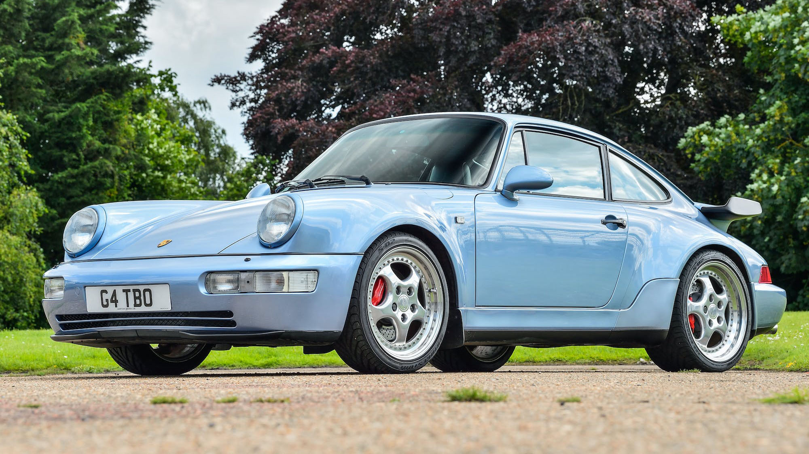

The Greatest Porsche of All Time
When the 911 (type 964) appeared at the end of the 1980s, it introduced advanced driving and aerodynamic technology that paved the way for all future models. Today it’s one of the most sought after of all 911 models. (Porsche.com)
Models & Specs
- Carrera 2 (Rear-wheel drive)
- Produced: 1989–1994
- Engine: 3.6 L NA flat-6
- Horsepower: 247 hp @ 6,700 rpm
- Torque: 228 lb-ft @ 4,800 rpm
- Carrera 4 (All-wheel drive)
- Produced: 1989–1994
- Engine: 3.6 L NA flat-6
- Horsepower: 247 hp @ 6,700 rpm
- Torque: 229 lb-ft @ 4,800 rpm
- 964 Turbo (The GOAT)
- Produced: 1991–1994
- Engine: 3.6 L single turbo flat-6
- Horsepower: 355 hp @ 5,500 rpm
- Torque: 384 lb-ft @ 4,200 rpm
